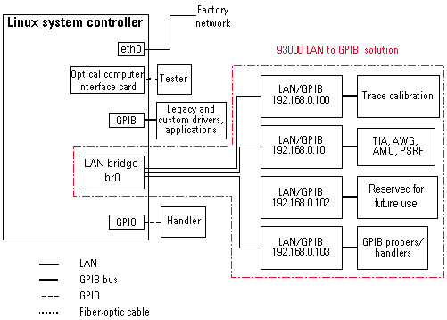
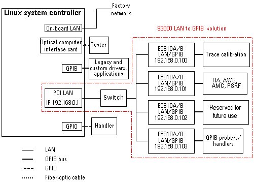
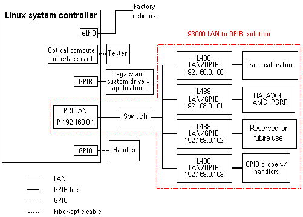

INTERFACE_SECTION section
This topic describes how to configure the INTERFACE_SECTION section of the model file for the different LAN to GPIB gateways.
- Solution with the 7032A LAN to GPIB gateway (E5810A) for the Z620:

- Solution with the 7032A LAN to GPIB gateway (E5810A) for Z400/Z800:

- Solution with the 7032B LAN to GPIB gateway (L488) (not supported with system controller Z620):

Standard configuration for the LAN to GPIB solution
In the INTERFACE_SECTION, one entry must be present for every LAN to GPIB gateway that is used for controlling GPIB instruments. The number of gateways is not restricted.
Syntax
<logical_bus>: iftype=GPIB, addr = "<interface_name>"
For <logical_bus> use:
SOCGPIBfor the first LAN to GPIB gatewaySOCGPIB2for the secondSOCGPIB3for the third- etc.
Logical buses describe LAN to GPIB gateways that are used to control GPIB instruments such as WGC and TIA. The name of each logical bus must be unique, and is case sensitive.
The syntax of <interface_name> depends on the
driver you use.
Example
If two E7032A LAN-GPIB adapters using the vxi11 driver are installed for instrument control, the following two statements must be present in the INTERFACE_SECTION:
SOCGPIB : iftype=GPIB, addr="vxi11/e5810a/192.168.0.100/gpib0" SOCGPIB2 : iftype=GPIB, addr="vxi11/e5810a/192.168.0.100/gpib0"
Using the vxi11 driver
Syntax of <interface_name>
<interface_name> ::= "<interface_driver>/<model>/<IP_address>/<gateway_interface_name>"
<model> identifies the particular model of the LAN to GPIB gateway. Advantest supports the following models.
<model> |
Description |
|---|---|
e5810a |
E7032A (E5810A) (this is the default when no <model> is present) |
l488 |
E7032B (L488) adapter |
Examples
Using the E7032A (E5810A) LAN to GPIB gateway
SOCGPIB : iftype=GPIB, addr="vxi11/e5810a/192.168.0.100/gpib0"SOCGPIB : iftype=GPIB, addr="vxi11/e5810a/192.168.0.101/gpib0"SOCGPIB : iftype=GPIB, addr="vxi11/e5810a/192.168.0.103/gpib0"SOCGPIB : iftype=GPIB, addr="vxi11/192.168.0.103/gpib0"Notee5810ais not supported for SmarTest revisions < 6.5.3Notegpib0is Supported for SmarTest revisions < 6.5.3
Using the E7032B (L488) LAN to GPIB gateway solution
SOCGPIB : iftype=GPIB, addr="vxi11/l488/192.168.0.100/gpib0"SOCGPIB : iftype=GPIB, addr="vxi11/l488/192.168.0.101/gpib0"SOCGPIB : iftype=GPIB, addr="vxi11/l488/192.168.0.103/gpib0"
Functional changes
- Introduced before SmarTest 6.3.2
- SmarTest 6.5.3: New LAN to GPIB gateway introduced (L488)
- SmarTest 7.6.2: SICL removed